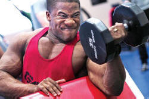

Word stress (/ˈwɜːd ˌstres/)

There are two small marks in the heading for this guide that you
need to be aware of before we begin: ˈ and ˌ.
These are
the conventional ways to show stress in words and used in what follows. The raised mark (ˈ) is shown
immediately before the stressed syllable and the lowered mark (ˌ)
comes before the secondary (or less obvious) stress.
For example, in the word pronunciation, there are two
stresses (a secondary one on the second syllable and a main stress on the
penultimate syllable: /prə.ˌnʌn.sɪ.ˈeɪʃ.n̩/.
It sounds like proNUNciATION.
If you are not familiar with phonemic transcription, do not worry
now. In what follows, we will be using very little except
these two stress indicators. All transcriptions are
in black.
There is a
short course in learning to transcribe English sounds phonemically
on this site.
Where's the main stress in the following? Click on the table when you have marked it in your head.

As you can see, we can stress the first, second, third or fourth syllable on words in English (and even the fifth or sixth) and there are, unfortunately, no hard-and-fast rules for which is right.
|  | What is stress? |
It is often assumed that stressed syllables are simply spoken in a louder voice but that's only partly right. There are, in fact, three elements which vary:
- Loudness: how much force is used when saying the syllable
- Pitch: stressed syllables are often pronounced in a higher tone
- Length: stressed syllables take longer to utter than unstressed ones
You'll find a little more on pitch and tone in the guide to key concepts in intonation.
We also need to be aware of the concept of unstress.
Clearly, if we can have stressed syllables in a word, the other
syllables will, by definition be unstressed. For example:
In a word like geographical, we have a primary stress on
the third syllable (graph) and a secondary stress on the first
syllable (ge).
The stress pattern looks like this:
GEoGRAphical. This
word transcribes as /ˌdʒɪə.ˈɡræ.fɪk.l̩/
and even if the phonemic transcription is mysterious to you, you
need to notice two important phenomena:
- The pronunciation of the second syllable is not an 'o' as in open but is reduced to a very short sound /ə/ which is the same sound as begins words like about and alive.
- The pronunciation of the final syllable is transcribed as /k.l̩/ showing that there is no vowel at all between the /k/ sound made by 'c' and the /l/ sound made by the letter 'l'.
These two changes to the sound expected from the spelling of the word happen because they occur in the unstressed syllables of the word. Weak forms like the /ə/ and the loss of a vowel as in /k.l̩/ can only occur in unstressed syllables. Compare this with, e.g.:
- A: Did you say biographical?
- B: No. I said geographical!
In this, the first syllable is now taking the main stress and the pronunciation of the 'o' assumes the form of the 'o' in go or show (/ɡəʊ/, /ʃəʊ/). The secondary stress has now moved to the third syllable.
 |
Is stress entirely random? |
No. There are some rules and we are going to look at them
here. It will however, remain true that in many cases the
stress in a multisyllable word cannot be guessed or deduced from
any rule at all so our learners will need all the help they can get.
A simple rule of thumb, and certainly the way to guess, is to assume
that any common two-syllable word in English will be stressed on the
first syllable (unless it's a verb, when the stress falls on the
second syllable, conventionally [see below]).
 |
Word roots |
Words which have early roots in English are the simplest to stress because the stress generally remains fixed regardless of how many affixes we use with them. For example:
| ˈplease | ˈpleasant | unˈpleasant | unˈpleasantly | unˈpleasantness | disˈplease | disˈpleasing | disˈpleasingly |
| ˈstand | underˈstand | underˈstanding | misunderˈstand | misunderˈstanding |
The problem for learners, of course, is to recognise such words
and that is not easy.
Learners from Germanic language backgrounds often have fewer
difficulties because they can look for cognates and these will
normally be words which maintain the stress.
Those from Italic language backgrounds can often
make guesses because of a lack of a cognate in their languages.
Those from non-European language backgrounds have no such resources
to call on but words like these are often short, describe simple
concepts and are non-academic or non-technical.
That helps a little.
An even simpler rule is that in English we rarely stress an
affix:
| disaˈppoint | reˈcover | unˈdo | misrepreˈsent | underˈestimate | preˈmediditate | coˈoperate |
etc.
Word endings |
- -ment, -ness, -less, -en
- Nouns formed with the suffixes -age, -ful, -ing, -ly, -y, -ment, -ness
and -less have
no effect on words stress. Similarly, verbs formed with
-en suffix do not affect word stress. For example:
ˈpostage ˈhopeful ˈdriving ˈlively ˈsmelly disˈappointment ˈhappiness ˈhopelessness ˈwiden
Words which are more formal, academic or technical often have
their roots in Latin or Greek and with these words the stress may shift with
affixation but all is not lost because there are some rules.
It is also true that many thousands of words fall into these
categories and, once learnt, the rules can be applied with
almost 100% success.
penultimate syllable |
- -tion, -sion
- nouns formed with these two endings always follow this rule:
confˈusion susˈpicion deˈrision misrepresenˈtation estiˈmation mediˈtation conˈversion - -ic
- adjectives formed with this suffix also follow the
penultimate syllable rule:
ecoˈnomic photoˈgraphic undiploˈmatic empaˈthetic symˈbolic phoˈnetic emˈphatic
antepenultimate syllable |
- -ology, -ography
- nouns in technical (and not so technical) registers often
end with these two suffixes. The stress falls on the
syllable before the one
before last:
anthroˈpology phoˈtography onˈtology biˈology geˈography epistemˈology phonˈology - -ity
- nouns ending with this suffix are often formed from
adjectives
curiˈosity aˈbility diˈversity conditionˈality faˈtality humˈanity insensiˈtivity - -ian
- these words are formed from other nouns and denote a person,
and adjective
or a philosophic standpoint
The suffix -ite, which often has a similar meaning, does not affect the stress: Trotskyite, Castro-ite, Thatcherite, Hitlerite etc.libˈrarian utiliˈtarian orˈwellian darˈwinian phoneˈtician cliˈnician mathemaˈtician ˈSyrian
There are some who aver that the stress falls on the syllable before the suffix. That's slightly misleading. Use the antepenultimate rule or move the stress to the last syllable of the stem. - -ate
- these are generally verbs. When they have three or
more syllables, they follow the antepenultimate rule:
ˈcultivate ˈhesitate ponˈtificate disˈseminate ˈaggravate necˈessitate ˈvegetate
A simpler (but not fully accurate) way to explain this in the classroom is to say that in all these penultimate / antepenultimate cases, the stress moves to the syllable before the suffix.
Oddballs:
|
|
last syllable |
- -ee, eer
- although it was said above that we do not, in English,
normally stress the
affix, these two are common exceptions because they are 'borrowed' suffixes
(from the French -ier). They form nouns for people
frequently and also verbs:
enginˈeer electionˈeer escapˈee employˈee racketˈeer puppetˈeer auctionˈeer
There are other exceptions, and they include:
- -ese
- Chinˈese, managementˈese, journalˈese etc. (Many of these refer to languages or types of language.)
- -esque
- grotˈesque, burlˈesque etc. (Many of these make adjectives taken from people, genres or movements [Kennedyˈesque, Pythonˈesque, McCarthyˈesque etc.].)
- -ique
- mystˈique, antˈique, critˈique, technˈique etc.
- -ette
- discˈette, launderˈette, bankˈette, cassˈette, corvˈette, marionˈette etc. (Many of these refer to diminutives of nouns.)
 |
Stress shifting |
|
| noun / adjective | verb | |
| ˈpresent | preˈsent |
There is a large group of words which shift stress from the
second syllable (as verbs) to the beginning (as nouns or adjectives).
This can be expressed the other way around according to your taste
as a shift from the first syllable to the second or last syllable,
moving from the noun/adjective to the verb.
Common ones are,
for example
| exˈport (verb) | → | ˈexport (noun) | conˈvict (verb) | → | ˈconvict (noun) |
| abˈsent (verb) | → | ˈabsent (adjective) | perˈfect (verb) | → | ˈperfect (adjective) |
| deˈcrease (verb) | → | ˈdecrease (noun) | reˈfund (verb) | → | ˈrefund (noun) |
and there are at least 150 more of these (some quite obscure). Here's a short list:
| absent abstract abuse access address affect affix ally annex attribute combat combine compact compound conduct conflict conscript consort construct contest contract contrast converse convert |
convict decrease default defect digest discard discharge discount discourse envelope exploit export extract finance frequent import incense increase indent insert insult intercept intern |
intrigue mismatch mandate misprint object offset overlap perfect permit pervert present process produce progress project protest rebel recall recoil record recount redirect |
redress refill refund reject relapse reprint research retake rewrite segment subject survey suspect torment transfer transform transplant transport underline update upgrade upset |
If you would like that list as a PDF document, you can download it here.
Notes:
- Participle adjectives take the same stress as the verb (because that is how they are formed) so we get, e.g., for the word record, /ˈrek.ɔːd/ (noun), and /rek.ˈɔːd/ (verb) and /rɪˈk.ɔː.dɪd/ (adjective).
- The verb stress falls on the second or the last syllable (some
are three syllable words). For example, in the list above
there are three: underline, intercept and envelope.
The pronunciations are:
/ˈʌn.də.laɪn/ (noun) to /ˌʌn.də.ˈlaɪn/ (verb)
/ˈɪn.tə.sept/ (noun) to /ˌɪn.tə.ˈsept/ (verb)
/ˈen.və.ləʊp/ (noun) to /ɪn.ˈve.ləp/ (verb)
but there are also other changes to the vowel sounds. - One verb-noun pair is missing from the list above:
reˈfuse (a verb meaning decline or reject)
and ˈrefuse (a noun meaning rubbish).
The words are not closely connected in meaning, the
pronunciation of the 's' alters from
/z/ in the verb to /s/ in the noun and the pronunciation
of the vowel in the first syllable changes from
/ɪ/ in the verb
to /e/ in the noun:
/rɪ.ˈfjuːz/ (verb) and /ˈrɛfjuːs/ (noun)
Both words derive ultimately from the Old French verb refuser but many would consider them now unconnected in meaning in Modern English, i.e. an example of homonymy not polysemy. - When some vowels are de-stressed, they are pronounced as
weak forms e.g.:
/prə.ˈɡres/ (verb) and /ˈprəʊ.ɡres/ (noun)
/kəm.ˈbæt/ (verb) and /ˈkɒm.bæt/ (noun)). - It was said above that we do not usually stress affixes in English
(apart from the six covered above which are stressed!).
Well, here are more exceptions. With some nouns, the main
stress falls on the prefix in these cases, e.g.:
his ˈrecall is poor
I demand a ˈrecount
this needs a complete ˈrewrite
perform a heart ˈtransplant
put in an ˈunderline
pay for a computer ˈupgrade
As nouns, these are: /ˈrɪk.ɔːl/, /ˈrɪk.aʊnt /ˈriː.raɪt/, /ˈtræn.splɑːnt/, /ˈʌn.də.laɪn/, /ˈʌp.ɡreɪd/
As verbs, they are: /rɪˈk.ɔːl/, /rɪˈk.aʊnt/, /ˌriː.ˈraɪt/, /træn.ˈsplɑːnt/, /ˌʌn.də.ˈlaɪn/, /ˌʌp.ˈɡreɪd/ - A number of other changes can occur in parallel to the
stress shift:
record: /’rɛkɔːd/ to /rɪˈkɔːd/ (with a change to the first vowel from /ɛ/ to /ɪ/)
abuse: /əˈbjuːs/ to /əˈbjuːz/ (with a final consonant change from /s/ to /z/).
(This also occurs with the verb use. when it is a lexical verb as in:
I used a hammer
the 's' is pronounced /z/, but in
I used to go
the 's' is pronounced /s/.)
combine: /ˈkɒmbaɪn/ to /kəmˈbaɪn/ (with a vowel change from /ɒ/ to /ə/ [the first is a piece of farm machinery]). This is a common phenomenon which also occurs with all the examples in the table above which begin com- or con- (combat, compact, compound, conduct, conflict, conscript, consort, construct, contest, contract, contrast, converse, convert, convict). - These pairs of words are a subset of homographs in that they are spelled the same but vary in both meaning and pronunciation. They are often classified as heteronyms or heterophones.
- There is a noticeable tendency in English to discontinue the use of the verb stress and pronounce all these words as the noun / adjective is pronounced. We are not there yet, however.
- Some verb-noun pairings are pronounced the same regardless of word class. Examples include format (/ˈfɔː.mæt/) and disdain (/dɪs.ˈdeɪn/), the first always stressed on the first syllable and the second always on the second.
 |
Compounds |
compound nouns
Compound nouns are usually stressed on the first element
with a secondary stress on the second element. This is one of
the tests for a compound noun rather than a pre-modified noun.
Compare, e.g.:
ˈgreenˌhouse and ˌgreen ˈhouse
In the first, we are referring to a glass construction but in the
second, we are referring to the colour of a house.
The first is a true compound; the second is a pre-modified noun.
There are hundreds of examples which follow this pattern:
ˈcandleˌstick, ˈdishˌwasher, ˈblackˌboard, ˈheartˌbeat, ˈwindˌmill,
and, of course, ˈwordˌstress etc.
compound verbs
Compound verbs are much more rarely two verbs combined but most
follow the same pattern:
ˈbabyˌsit, ˈkickˌstart, ˈforceˌfeed
compound words formed from multi-word verbs
Nouns and adjectives formed from multi-word verbs also exhibit the stress
pattern of main then secondary so we get, e.g.:
ˈoffˌputting, ˈbreakˌdown, ˈknockˌout etc.
In fact, the pattern is not quite so simple because prepositional
verbs and phrasal verbs are stressed differently and the compounds
formed from them also have some interesting stress patterns.
For more, see the guide to multi-word
verbs.
compound adjectives and adverbs
Compound adjectives and the rarer compound adverbs often exhibit the opposite stress patterns:
Adjectives: ˌtopˈclass, ˌsecondˈrate, ˌbackˈhanded,
ˌfarˈfetched
Adverbs: ˌthereˈupon, ˌhenceˈforth, ˌupˈstairs
However, when these are used attributively, the pattern reverses
and we get:
a ˈtop-ˌclass act, a ˈsecond-ˌrate act, an ˈupˌstairs room, a
ˈfar-ˌfetched story
 |
Focusing on stress in the classroom |
As we saw above, word stress in English is highly mobile.
Learners will, of course, especially at lower levels, be tempted to
transfer the rules and patterns of their first languages into
English, resulting in mistaken stress very often.
The following cannot cover all languages but here is a list to give
you some idea of the possibilities:
- Languages with predictable stress
- in French (allegedly) the stress always falls on the final
syllable (although some will say that there is, in fact, no word
stress in French).
in Hungarian, again allegedly, the stress is always on the first syllable.
in Polish, the stress almost always falls on the penultimate syllable (although loan words will vary the pattern).
in Italian and Spanish the stress also falls frequently on the penultimate syllable but there are some complex rules to determine where the stress should be placed.
most Swedish polysyllabic words have the stress on the first syllable.
in Portuguese, most stresses fall on the last syllable but there are rules for words where it is in a different place. - Languages with unpredictable stress include:
- Russian
Greek (although stress is always marked in lower-case writing)
in Arabic, stress is variable across dialects (and that applies to Portuguese, too) so stress may fall unpredictably. The many varieties of Arabic are not usually mutually comprehensible and pronunciation, in particular, is vary variable.
in German, stress is frequently on the first syllable but there are exceptions all over the place depending on suffixation, prefixation (whether separable or not) and so on. - Languages with alternative systems:
- Japanese does not have a stress accent like English.
In English, as we saw above the stress affects pitch, loudness
and length of the syllable.
Japanese, by contrast, has what is called a pitch accent which can be high or low. The syllable, however, is pronounced with the same loudness and takes the same amount of time to utter.
In tonal languages, such as Chinese languages and many South-East Asian languages such as Thai, the stressed syllable is denoted by a larger than usual tone swing.
Learners whose first languages have predictable and dominant
stress patterns (the first group) will be tempted to transfer the
rules to English.
Learners whose languages have unpredictable stress patterns may be
confused by the fact that English orthography does not mark the
stress for them.
Learners whose languages exhibit alternative systems may have
difficult stressing words at all and sound very flat or monotonous.
Every time a new multisyllable word is introduced in a
classroom, therefore, the stress needs to be explicitly highlighted
and practised.
Here are three ways to highlight. Pick one and keep
to it so your learners know what it signifies.
 |
 |
 |
Speakers of most European languages will be able to do this but speakers of other languages may encounter trouble.
| Go to the index for the pronunciation section of the in-service guides |